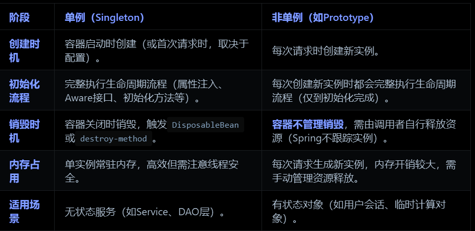
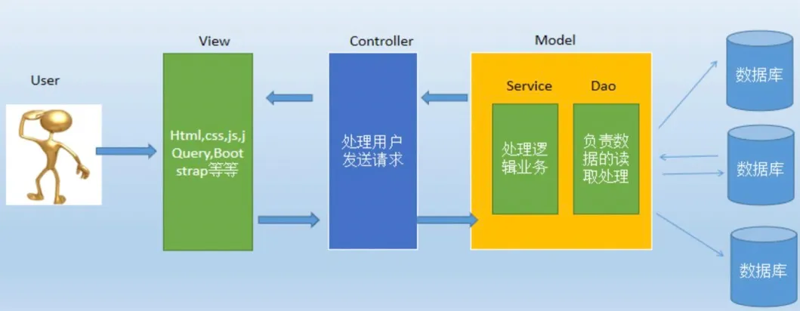
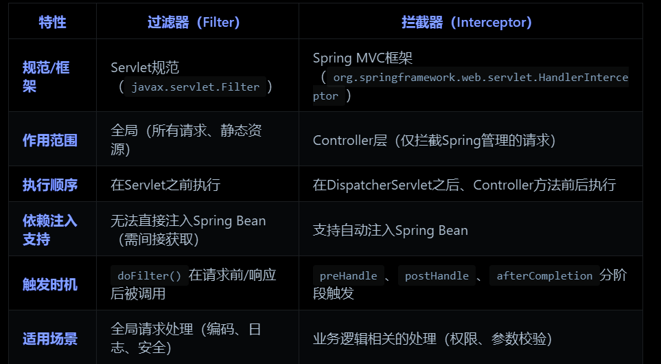

Spring八股
3. Spring
- Spring核心思想
- IoC：即控制反转的意思，它是一种创建和获取对象的技术思想，依赖注入(DI)是实现这种技术的一种方式。我们不通过new关键字创建对象，而是通过IoC容器来帮我们实例化对象，可以降低对象间耦合度。
- AOP：是面向切面编程，能够将那些与业务无关，却为业务模块所共同调用的逻辑封装起来，以减少系统的重复代码，降低模块间的耦合度。
- JDK Proxy 是一种只针对接口的动态代理机制，可以在运行时生成实现对应接口的代理对象，用于统一处理接口方法调用逻辑，比如增强日志、权限、事务等。
- IOC（Inversion Of Control）
- 实现机制
- 反射：Spring IOC容器利用Java的反射机制动态地加载类、创建对象实例及调用对象方法
- 依赖注入：IOC的核心概念是依赖注入，即容器负责管理应用程序组件之间的依赖关系，包括构造函数注入、属性注入和方法注入
- 工厂模式：Spring IOC容器通常采用工厂模式来管理对象的创建和生命周期。容器作为工厂负责实例化Bean并管理它们的生命周期
- 在Spring中，开发者可以通过XML配置文件或者基于注解的方式声明组件之间的依赖关系。当应用程序启动时，Spring容器会扫描这些配置或注解，然后利用反射来实例化Bean（即Java对象），并根据配置自动装配它们的依赖。
- 实现机制
- AOP
- AOP 中最小的单元是“切面”。一个“切面”可以包含很多种类型和对象，对它们进行模块化管理，例如事务管理。
- 在面向切面编程的思想里面，把功能分为核心业务和周边功能。核心业务功能和周边功能是分别独立进行开发，然后把切面功能和核心业务功能 “编织” 在一起
- AOP能够将那些与业务无关，却为业务模块所共同调用的逻辑或责任封装起来，便于减少系统的重复代码，降低模块间的耦合度，并有利于未来的可拓展性和可维护性
- 实现依赖于动态代理技术，JDK Proxy负责有接口的类，而没有实现接口的类用CGLIB（生成一个被代理类的子类）
- 相关注解
- @Aspect：用于定义切面，标注在切面类上。
- @Pointcut：定义切点，标注在方法上，用于指定连接点。
- @Before：在方法执行之前执行通知。
- @After：在方法执行之后执行通知。
- @Around：在方法执行前后都执行通知。
- @AfterReturning：在方法执行后返回结果后执行通知。
- @AfterThrowing：在方法抛出异常后执行通知。
- @Advice：通用的通知类型，可以替代@Before、@After等。
- Spring中的循环依赖
- 循环依赖分类：
- 通过构造方法进行依赖注入时产生的循环依赖问题
- 通过setter方法进行依赖注入且是在多例（原型）模式下产生的循环依赖问题
- 通过setter方法进行依赖注入且是在单例模式下产生的循环依赖问题
- 只有第三种依赖可以解决，方法是三级缓存。三级缓存都是Map类型的
- 三级缓存结构
- 一级缓存 singletonObjects：存放完全初始化好的单例 bean（getBean() 正常返回的对象）。
- 二级缓存 earlySingletonObjects：存放早期暴露的（还没被初始化、AOP增强等的）bean 实例，解决循环依赖。
- 三级缓存 singletonFactories：存放用于创建 bean 的 ObjectFactory，对 AOP 代理等动态包装很关键。
- Bean的创建过程：
- 实例化Bean后，放【ObjectFactory】到三级缓存。
- 属性赋值后，提前暴露“半成品”bean到二级缓存（没有AOP增强，只是原始对象）。
- 初始化和AOP增强后，将“完整，可用的”Bean放入一级缓存，将二三级缓存对应数据删除。
- getBean(A) → new A 实例 → singletonFactories.put(“A”, ObjectFactory) → injection: @Autowired B → getBean(B) → new B 实例 → singletonFactories.put(“B”, ObjectFactory) → injection: @Autowired A → getBean(A)[循环] → 1级无 2级无 3级有 → 使用A的ObjectFactory生成A实例，放到2级缓存 → 返回A实例（未初始化） → B.a = A (半成品A) → B初始化完，放到1级缓存，清理2级、3级 → A.b = B → A初始化完，放到1级缓存，清理2级、3级
- 循环依赖分类：
- Spring用到的设计模式：工厂模式、代理模式、单例模式、观察者模式、适配器模式、模板方法模式
- Spring常见注解
- @Autowired：主要用于自动装配bean
- @Component：用于标记一个类作为Spring的bean
- @Configuration：用于标记一个类作为Spring的配置类
- @Bean：用于标记一个方法作为Spring的bean工厂方法，Spring会将该方法的返回值作为一个bean
- @Service：用于标记一个类作为服务层的组件
- @Repository：用于标记一个类作为数据访问层的组件
- @Controller：用于标记一个类作为控制层的组件
- Spring事务
- 事务管理在Spring Boot中通常是通过 @Transactional 注解来实现的
- Spring事务是通过代理对象来控制的
- 事务失效情况：抛出未捕获异常、事务嵌套时配置有误、事务方法调用非事务方法、方法不是public
- Spring 中的 Bean 默认都是单例的。但是也支持将Bean设置为多例模式，即每次请求都会创建一个新的Bean实例。
- Spring 只帮我们管理单例模式 Bean 的完整生命周期，对于
prototype的 Bean，Spring 在创建好交给使用者之后不再管理后续生命周期 - 
- 在Spring框架中，如果你希望在Bean加载（即实例化、属性赋值、初始化等过程完成后）或销毁前后执行某些逻辑，你可以使用Spring的生命周期回调接口或注解。这些接口和注解允许你定义在Bean生命周期的关键点执行的代码。
- Bean的注入有XML注入和注解注入两种方法。使用 XML 文件进行 Bean 注入时，Spring 在启动时会读取 XML 配置文件，注入过程：bean定义解析->bean定义注册->实例化和依赖注入。注解方式只有第一步不同，是类路径扫描（查找带@service、@controller等注解的类）
- Spring MVC
- MVC全名是Model View Controller，是模型(model)－视图(view)－控制器(controller)的缩写，一种软件设计典范，用一种业务逻辑、数据、界面显示分离的方法组织代码，将业务逻辑聚集到一个部件里面，在改进和个性化定制界面及用户交互的同时，不需要重新编写业务逻辑。
- 

- HandlerMapping作用是将请求映射到对应的controller，HandlerAdapter负责调用controller来处理请求
- SpringBoot与Spring
- Spring 是 Java 开发的基础生态，提供核心功能。Spring Boot 是对 Spring 的进一步封装和增强，让你更简单、更快捷地开发和部署 Spring 应用。
- SpringBoot的优势
- Spring Boot提供一系列的开箱即用的组件和自动配置，通过引入不同的 Starter，可以快速集成常用的框架和库
- Spring Boot提供了快速的应用程序启动方式，可通过内嵌的Tomcat、Jetty或Undertow等容器快速启动应用程序
- Spring Boot通过自动配置功能，根据项目中的依赖关系和约定俗成的规则来配置应用程序
- 约定大于配置是Spring Boot的核心设计理念，它通过预设合理的默认行为和项目规范，大幅减少开发者需要手动配置的步骤，从而提升开发效率和项目标准化程度

- Spring Boot starter
- starter（起步依赖），本质是一个标准的 Maven 依赖包（Jar），它里面会“串联”或聚合好一组常见的相关依赖和默认配置，目的是让你只需要引入一个 starter，就能轻松用上一个完整的技术功能模块，提升开发效率。
- spring-boot-starter-web：这是最常用的起步依赖之一，它包含了Spring MVC和Tomcat嵌入式服务器，用于快速构建Web应用程序
- spring-boot-starter-security：提供了Spring Security的基本配置，帮助开发者快速实现应用的安全性，包括认证和授权功能。
- mybatis-spring-boot-starter：用于简化在Spring Boot应用中集成MyBatis的过程
- spring-boot-starter-data-jpa 或spring-boot-starter-jdbc：如果使用的是Java Persistence API (JPA)进行数据库操作则引入前者（包含了Hibernate等JPA实现），用JDBC就引入后者。
- spring-boot-starter-data-redis：用于集成Redis缓存和数据存储服务
- spring-boot-starter-test：包含了单元测试和集成测试所需的库
- Spring Boot常见注解
- @SpringBootApplication：用于标注主应用程序类，标识一个Spring Boot应用程序的入口点，同时启用自动配置和组件扫描。
- @RestController：结合@Controller和@ResponseBody，返回RESTful风格的数据。
- @RequestMapping：用于映射HTTP请求路径到Controller的处理方法
- @GetMapping、@PostMapping、@PutMapping、@DeleteMapping：简化@RequestMapping的GET、POST、PUT和DELETE请求
- 其余与Spring相同
- 过滤器和拦截器
- 
- 过滤器在请求进入 Servlet 容器后，在到达目标 Servlet 或控制器之前执行；拦截器在请求到达控制器之后，在控制器方法执行前后执行。
- JDBC连接数据库步骤
- 加载数据库驱动程序：如可以通过 Class.forName(“com.mysql.jdbc.Driver”) 加载MySQL驱动程序
- 建立数据库连接：使用 DriverManager 类的 getConnection(url, username, password) 连接
- 创建 Statement 对象：通过 Connection 对象的createStatement() 方法创建一个 Statement 对象用于执行操作
- 执行 SQL 查询或更新操作：使用 Statement 对象的executeQuery(sql) 、executeUpdate(sql) 方法来执行
- 处理查询结果：如果是 SELECT 查询操作，通过 ResultSet对象来处理查询结果
- 关闭连接：在完成数据库操作后，需要逐级关闭数据库连接相关对象
- Mybatis简单介绍（
复杂的暂时不管）- MyBatis 就是一个让你手写 SQL，然后帮你自动把 SQL 执行&结果转对象、简化数据库操作的 Java 框架。它是一款优秀的开源 ORM（对象关系映射）框架，主要用于简化 Java 程序对关系型数据库的操作。
- MyBatis 让你用 XML 文件（或注解）来写 SQL 语句，并把这些 SQL 和 Java 方法做一一对应映射。只需要写 SQL，MyBatis 自动把参数填进去，结果查出来转成相应的 Java 对象。
1 | |
1 | |
- Spring Cloud
- Spring Cloud是用于构建分布式系统中的微服务架构的工具，提供了服务注册与发现、负载均衡、断路器、网关等功能。
- 微服务常用的组件：
- 注册中心：注册中心是微服务架构最核心的组件，作用是对新节点的注册与状态维护，通常会采用心跳机制最大程度保证已登记过的服务节点都是可用的
- 负载均衡：通常微服务在互相调用时，并不是直接通过IP、端口进行访问调用，而是先通过服务名在注册中心查询该服务拥有哪些节点，注册中心将该服务可用节点列表返回给服务调用者，这个过程叫服务发现。服务调用者要从多个节点中选择，因此服务调用者一端必须内置负载均衡器，通过负载均衡策略选择合适的节点发起实质性的通信请求
- 服务通信：封装了服务间通信的协议
- 配置中心：通过部署配置中心服务器，将各节点配置文件从服务中剥离，集中转存到配置中心。
- 集中式日志管理：通过搭建独立的日志收集系统，定时抓取各节点增量日志形成有效的统计报表，为统计和分析提供数据支撑。
- 服务保护：如果某个微服务出现高延迟导致线程池满载，或是业务处理失败，这里就需要引入服务保护组件来实现高延迟服务的快速降级，避免系统崩溃。
- 应用结构
- 服务注册中心（如Nacos）
- 配置中心（Spring Cloud Config 或 Nacos）
- 网关服务（Spring Cloud Gateway）
- 业务服务（多个，服务之间通过Feign调用）
- 监控与追踪（Sleuth、Zipkin）
- 负载均衡算法：简单轮询、加权轮询、简单随机、加权随机、一致性哈希（可实现同一个客户端或相同参数的请求对应一台服务器）、最小活跃数
- 服务熔断：当调用链路的某个微服务不可用或者响应时间太长时，会进行服务熔断，不再有该节点微服务的调用，快速返回错误信息。当检测到该节点微服务调用响应正常后，恢复调用链路。
- 服务降级：对某些负荷会比较高的情况，为了预防某些功能（业务场景）出现负荷过载或者响应慢的情况，在其内部暂时舍弃对一些非核心的接口和数据的请求，而直接返回一个提前准备好的错误处理信息
| 组件 | 作用简介 |
|---|---|
| Eureka | 服务注册与发现中心（已被 Spring 官方弃用） |
| Nacos | 推荐的注册中心 + 配置中心（阿里开源） |
| Config | 分布式配置中心 |
| Gateway | 微服务 API 网关，替代 Zuul |
| OpenFeign | 声明式 HTTP 客户端，用于服务之间远程调用 |
| Hystrix | 熔断降级，已弃用，推荐使用 Resilience4j |
| Sleuth + Zipkin | 分布式链路追踪 |
| Bus | 配置自动刷新总线 |
| Consul | 可选的注册中心+配置中心（HashiCorp 提供） |
Spring八股
https://frosty-xue.github.io/2025/05/13/Spring八股/